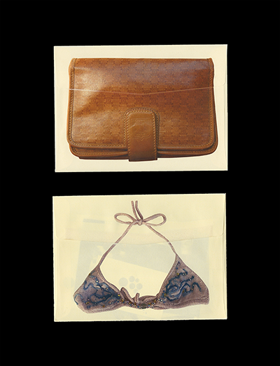
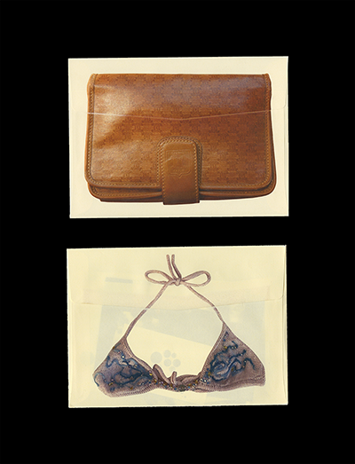
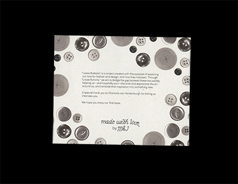
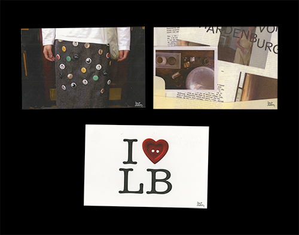
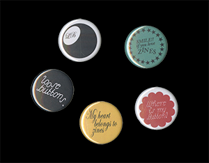
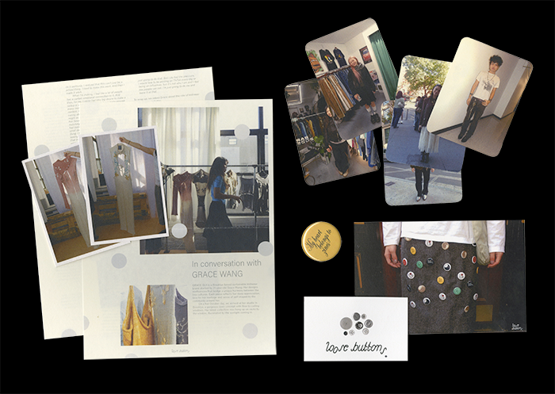
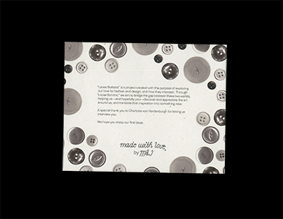
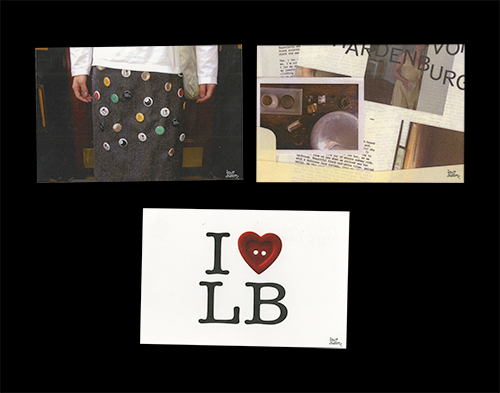
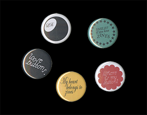
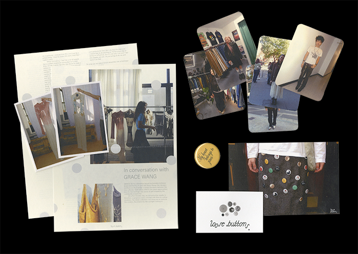

Loose Buttons
Identity, Print, Website
2024—Present
Identity, Print, Website
2024—Present
A publication that explores community-oriented approaches in design by showcasing conversations that help support underrepresented local businesses and communities of New York City.
Founded and designed in collaboration with Moe Ebii
fromloosebuttons.com
Founded and designed in collaboration with Moe Ebii
fromloosebuttons.com
 

 






